🌳 Guía para principiantes
Video recomendado para quienes recién empiezan a jugar Minecraft.
| Desarrollador | Mojang Studios |
|---|---|
| Lanzamiento | 2011 |
| Género | Sandbox / Supervivencia |
| Modos | Individual y Multijugador |
| Plataformas | PC • Xbox • PlayStation • Nintendo Switch • Android • iOS |
Minecraft es un videojuego de construcción de tipo «mundo abierto» o en inglés sandbox creado originalmente por el sueco Markus Persson, que creó posteriormente Mojang Studios. El juego consiste en un mundo generado de manera procedural, compuesto por bloques tridimensionales que representan distintos materiales,
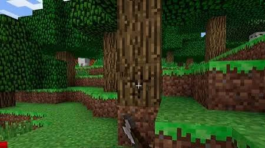
Lo primero que debes hacer es conseguir troncos para fabricar tus primeras herramientas.
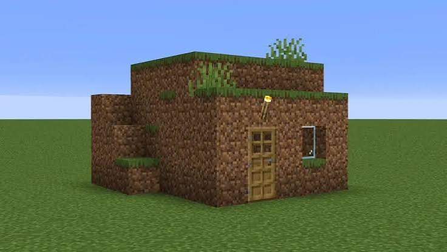
Antes de que llegue la noche construye una casa sencilla para protegerte de los mobs.
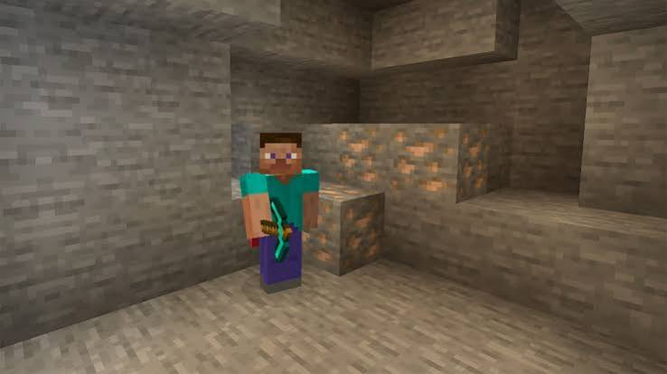
Explora una cueva y consigue suficiente hierro para fabricar herramientas y armadura.
Como primera cosa que se debe hacer es conseguir mader para empezar a fabricar herramientas y construir un refugio. Luego, se recomienda explorar cuevas para conseguir hierro y otros minerales. hecho lo anterior, se puede empezar a explorar el mundo y buscar biomas, mobs, encantamientos y jefes.
| Bioma | Características |
|---|---|
| Bosques | Abundante madera y animales pasivos, ideal para empezar una partida. |
| Desiertos | Templos con cofres, pirámides y aldeas de arenisca. |
| Junglas | Vegetación densa, templos ocultos y ocelotes/loros exclusivos. |
| Océanos | Monumentos oceánicos, naufragios y ruinas sumergidas. |
| Pantanos | Cabañas de brujas y árboles con enredaderas. |
| Taigas | Bosques de píceas, frecuentes lobos e iglús en la variante nevada. |
| Badlands | Terracota de colores y buena cantidad de oro expuesto. |
| Cherry Grove | Árboles de cerezo rosados, puramente decorativo pero muy popular para construir. |
| Deep Dark | Bioma profundo con Sculk y el temible Warden; máxima precaución. |
Atacan al jugador sin necesidad de ser provocados. Son la principal amenaza durante la noche y en cuevas.
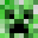
El Creeper es uno de los enemigos más conocidos de Minecraft. Se acerca silenciosamente al jugador y explota cuando está cerca.
| ❤️ Vida | 20 (10 corazones) |
|---|---|
| ⚔ Daño |
Fácil: 11 Normal: 22 Difícil: 32 |
| 🛡 Armadura | 0 |
| ⭐ Experiencia | 5 XP |
| 📦 Drops | • Pólvora (0-2) |
| 📍 Aparición | Overworld |
| 🌎 Biomas | Todos los biomas del Overworld |
| 🌙 Condiciones | Nivel de luz 0 y bloques sólidos. |
| 🔥 Inmune al fuego | No |
| ☀ Se quema con el sol | No |
| 👾 Tipo | Hostil |
| ⭐ Rareza | Común |
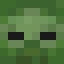
El mob hostil más común del juego. Camina lentamente hacia el jugador y ataca cuerpo a cuerpo. De noche aparece en grandes cantidades.
| ❤️ Vida | 20 (10 corazones) |
|---|---|
| ⚔ Daño | Fácil: 2 Normal: 3 Difícil: 4 |
| 🛡 Armadura | 2 |
| ⭐ Experiencia | 5 XP |
| 📦 Drops | • Carne podrida (0-2) • Raro: zanahoria, papa o lingote de hierro |
| 📍 Aparición | Overworld |
| 🌎 Biomas | Todos los biomas del Overworld; variantes en aldeas del desierto, nieve y jungla |
| 🌙 Condiciones | Nivel de luz 0. Puede convertirse en Zombi Ahogado bajo el agua. |
| 🔥 Inmune al fuego | No |
| ☀ Se quema con el sol | Sí (a menos que use casco) |
| 👾 Tipo | Hostil |
| ⭐ Rareza | Muy común |
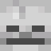
Enemigo a distancia que dispara flechas. Suele merodear en cuevas oscuras y es peligroso en zonas abiertas por su alcance.
| ❤️ Vida | 20 (10 corazones) |
|---|---|
| ⚔ Daño | Fácil: 2 Normal: 3 Difícil: 5 (varía con la distancia) |
| 🛡 Armadura | 0 |
| ⭐ Experiencia | 5 XP |
| 📦 Drops | • Huesos (0-2) • Flechas (0-2) • Raro: su arco |
| 📍 Aparición | Overworld |
| 🌎 Biomas | Todos, especialmente en cuevas y minas abandonadas |
| 🌙 Condiciones | Nivel de luz 0 |
| 🔥 Inmune al fuego | No |
| ☀ Se quema con el sol | Sí |
| 👾 Tipo | Hostil (a distancia) |
| ⭐ Rareza | Común |
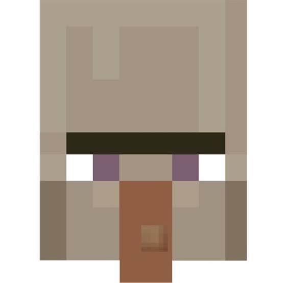
Lanza pociones dañinas a distancia (veneno, debilidad, lentitud) y se bebe pociones de curación o resistencia al fuego para sobrevivir.
| ❤️ Vida | 26 (13 corazones) |
|---|---|
| ⚔ Daño | Variable según la poción arrojada |
| 🛡 Armadura | 0 |
| ⭐ Experiencia | 5 XP |
| 📦 Drops | • Botella de cristal, azúcar, redstone, araña, pólvora o palo (según poción) |
| 📍 Aparición | Overworld |
| 🌎 Biomas | Pantanos (cabañas de bruja) |
| 🌙 Condiciones | Nivel de luz 0, o dentro de una cabaña de bruja |
| 🔥 Inmune al fuego | No |
| ☀ Se quema con el sol | No |
| 👾 Tipo | Hostil |
| ⭐ Rareza | Poco común |
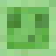
Mob saltarín que se divide en versiones más pequeñas al morir. Aparece en pantanos y en «chunks de limo» bajo tierra.
| ❤️ Vida | Grande: 16 Mediano: 4 Pequeño: 1 |
|---|---|
| ⚔ Daño | Grande: 4 Mediano: 2 Pequeño: 0 |
| 🛡 Armadura | 0 |
| ⭐ Experiencia | Grande: 4 · Mediano: 2 · Pequeño: 1 XP |
| 📦 Drops | • Bola de limo (0-2, solo tamaño pequeño) |
| 📍 Aparición | Overworld |
| 🌎 Biomas | Pantanos (con luna llena) y chunks de limo bajo el nivel Y=40 |
| 🌙 Condiciones | Se divide en 2-4 slimes más pequeños al recibir el golpe final |
| 🔥 Inmune al fuego | No |
| ☀ Se quema con el sol | No |
| 👾 Tipo | Hostil |
| ⭐ Rareza | Poco común (depende del chunk) |
| Criatura | Aparición | Nota |
|---|---|---|
| Ahogado (Drowned) | Océanos y ríos | Lanza tridentes; deja caer perlas de Ender ocasionalmente. |
| Husk | Desiertos | Variante del zombi que no se quema con el sol; aplica Hambre al golpear. |
| Zombi Aldeano | Overworld | Puede curarse con Debilidad + Manzana Dorada para volver a ser aldeano. |
| Esqueleto Fósil (Stray) | Biomas helados | Sus flechas aplican Lentitud. |
| Esqueleto Wither | Fortalezas del Nether | Aplica el efecto Marchitez; necesario para invocar al Wither. |
| Araña de cueva | Minas abandonadas | Más pequeña pero su veneno es peligroso. |
| Blaze | Fortalezas del Nether | Vuela y lanza bolas de fuego; deja Varillas de Blaze. |
| Ghast | Nether | Flota y dispara bolas de fuego explosivas a distancia. |
| Cubo de Magma | Nether | Salta constantemente; se divide como el Slime. |
| Piglin Brute | Bastiones del Nether | Siempre hostil, ignora el oro que lleves puesto. |
| Zoglin | Nether | Hoglin convertido; ataca todo, incluidos otros mobs. |
| Silverfish | Cuevas y monumentos oceánicos | Se esconde dentro de bloques de piedra infestada. |
| Endermite | Overworld (raro) | Puede aparecer al usar Perlas de Ender. |
| Vex | Mansiones del Bosque | Invocado por el Evoker; vuela y atraviesa bloques. |
| Evoker | Mansiones del Bosque, raids | Invoca Vex y ataques de garras de Vindicator con magia. |
| Vindicator | Mansiones del Bosque, raids | Ataca con hacha cuerpo a cuerpo, muy dañino. |
| Pillager | Avanzadillas de saqueadores | Ataca a distancia con ballesta; inicia raids en aldeas. |
| Ravager | Raids y mansiones | Bestia enorme montada por Pillagers durante los asaltos. |
| Guardian | Monumentos oceánicos | Dispara rayos láser; inflige Minería Lenta cerca del monumento. |
| Elder Guardian | Monumentos oceánicos | Jefe menor; aplica Minería Lenta a todo el monumento. |
| Shulker | Ciudades del End | Dispara proyectiles que causan levitación; deja caparazones para Cajas de Shulker. |
| Warden | Deep Dark | Ciego pero detecta vibraciones; el enemigo más peligroso del juego. |
Solo atacan si el jugador los provoca primero (o bajo ciertas condiciones específicas).
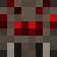
Mob neutral con luz alta y hostil en la oscuridad. Puede trepar muros y techos, lo que la hace difícil de esquivar en espacios cerrados.
| ❤️ Vida | 16 (8 corazones) |
|---|---|
| ⚔ Daño | Fácil: 2 Normal: 2 Difícil: 3 |
| 🛡 Armadura | 0 |
| ⭐ Experiencia | 5 XP |
| 📦 Drops | • Hilo (0-2) • Ojo de araña (raro) |
| 📍 Aparición | Overworld |
| 🌎 Biomas | Todos, sobre todo cuevas y bosques nocturnos |
| 🌙 Condiciones | Nivel de luz 0; neutral si el nivel de luz es alto |
| 🔥 Inmune al fuego | No |
| ☀ Se quema con el sol | No |
| 👾 Tipo | Neutral / Hostil según la luz |
| ⭐ Rareza | Común |
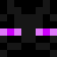
Mob alto y neutral que se teletransporta. Se vuelve hostil si el jugador lo mira a los ojos o lo ataca. Puede recoger y colocar bloques.
| ❤️ Vida | 40 (20 corazones) |
|---|---|
| ⚔ Daño | Fácil: 4 Normal: 7 Difícil: 10 |
| 🛡 Armadura | 0 |
| ⭐ Experiencia | 5 XP |
| 📦 Drops | • Perla de Ender (0-1) |
| 📍 Aparición | Overworld, Nether y End |
| 🌎 Biomas | Todos; muy común en el End |
| 🌙 Condiciones | Se enfurece si lo miras a los ojos o lo golpeas |
| 🔥 Inmune al fuego | No |
| ☀ Se quema con el sol | No, pero huye del agua y la lluvia teletransportándose |
| 👾 Tipo | Neutral (hostil si se provoca) |
| ⭐ Rareza | Poco común |
| Criatura | Aparición | Nota |
|---|---|---|
| Lobo (Wolf) | Bosques y taigas | Se puede domesticar con huesos; ataca si el dueño es atacado. |
| Oso Polar | Biomas helados | Se enfurece si te acercas a sus crías. |
| Llama | Montañas y sabanas | Escupe si es atacada; puede transportar cofres. |
| Panda | Junglas de bambú | Algunas variantes son agresivas de nacimiento. |
| Abeja | Llanuras, bosques de flores | Pica si se le molesta el panal o la colmena. |
| Piglin | Nether | Neutral si llevas oro equipado; comercia objetos del Nether. |
| Piglin Zombificado | Nether | Solo ataca si es golpeado primero, luego todo el grupo se enfurece. |
| Hoglin | Nether | Huye de los hongos deformados; ataca si se le acerca sin ellos. |
| Gólem de Hierro | Aldeas / invocado | Defiende a los aldeanos; neutral con el jugador salvo que lo ataques. |
| Cabra (Goat) | Montañas | Puede embestir ocasionalmente al jugador o a otros mobs. |
| Delfín | Océanos | Ayuda a encontrar tesoros y da Gracia del Delfín al nadar cerca. |
Nunca atacan al jugador. Suelen ser fuente de alimento, recursos o compañía.
| Criatura | Aparición | Nota |
|---|---|---|
| Vaca | Llanuras y bosques | Da carne y cuero; se puede ordeñar con un cubo. |
| Cerdo | Llanuras y bosques | Da chuletas de cerdo; se puede montar con una silla y zanahoria en caña. |
| Oveja | Llanuras y bosques | Da lana (esquilable) y carne; se puede teñir de 16 colores. |
| Gallina | Llanuras y bosques | Pone huevos, da carne y plumas. |
| Conejo | Llanuras, bosques, desiertos, tundras | Da carne y patas de conejo (ingrediente de poción de salto). |
| Caballo | Llanuras y sabanas | Domesticable y montable; variantes de color y velocidad. |
| Burro / Mula | Llanuras y sabanas | Pueden llevar cofres además de ser montados. |
| Gato | Aldeas / domesticado de Ocelote | Ahuyenta a los Creepers y Phantoms cerca del jugador. |
| Ocelote | Junglas | Se puede domesticar con pescado crudo, convirtiéndose en gato. |
| Loro | Junglas | Imita sonidos de mobs cercanos; puede posarse en el hombro. |
| Tortuga | Playas de arena | Pone huevos en la playa; da Caparazón de Tortuga. |
| Zorro | Taigas | Tímido con el jugador; caza gallinas y conejos. |
| Murciélago | Cuevas | Puramente decorativo, no da ningún drop. |
| Calamar | Océanos y ríos | Da tinta de calamar (bolsas de tinta). |
| Calamar Brillante | Cuevas con agua | Variante luminiscente; da tinta luminosa. |
| Ajolote | Cuevas con agua (bioma Lush) | Ayuda en combates acuáticos si se transporta en cubo. |
| Rana | Pantanos, biomas cálidos | Come luciérnagas y pequeños slimes; da huevas de rana. |
| Renacuajo | Agua de pantanos | Se convierte en rana con el tiempo. |
| Strider | Nether (lava) | Se puede montar sobre lava con una caña con hongo deformado. |
| Aldeano | Aldeas | Comercia objetos según su profesión y nivel. |
| Mercader Errante | Aparece aleatoriamente | Vende objetos exóticos a cambio de esmeraldas. |
| Gólem de Nieve | Invocado por el jugador | Lanza bolas de nieve a mobs hostiles; se derrite en biomas cálidos. |
| Allay | Mazmorras del Trial Chamber | Recoge objetos duplicados y los lleva al jugador si suena una nota. |
| Camello | Desiertos | Monta a dos jugadores a la vez; puede saltar muy alto. |
| Sniffer | Invocado desde huevo antiguo | Desentierra semillas antiguas excavando el suelo. |
| Mineral | Pico mínimo | Uso principal |
|---|---|---|
| Carbón | Ninguno (a mano o cualquier pico) | Antorchas y combustible |
| Hierro | Piedra | Herramientas, armadura y blindaje |
| Oro | Hierro | Encantamientos rápidos, comercio con piglins |
| Diamante | Hierro | Herramientas y armadura de alto nivel |
| Esmeralda | Hierro | Comercio con aldeanos |
| Netherita | Diamante | Mejora final de herramientas y armadura |
| Redstone | Hierro | Circuitos y mecanismos |
| Lapislázuli | Piedra | Mesa de encantamientos y tinte |
Existen 5 tipos de herramientas —Pico, Hacha, Pala, Azada y Espada— fabricables en 6 materiales, de más débil a más fuerte:
| Material | Durabilidad (pico) | Velocidad | Encantabilidad |
|---|---|---|---|
| Madera | 59 | Baja | 15 |
| Piedra | 131 | Media | 5 |
| Hierro | 250 | Alta | 14 |
| Oro | 32 | Muy alta (pero poco duradero) | 22 |
| Diamante | 1561 | Muy alta | 10 |
| Netherita | 2031 | Muy alta | 15 |
Nota: el Oro se rompe rápido pero tiene la mejor "encantabilidad", ideal para encantamientos raros con pocos libros.
Una armadura completa consta de 4 piezas: Casco, Pechera, Pantalones y Botas.
| Material | Puntos de armadura (set completo) | Durabilidad relativa | Notas |
|---|---|---|---|
| Cuero | 7 | Baja | Se puede teñir de cualquier color. |
| Cota de malla | 12 | Media | No craftable normalmente; se consigue por comercio o cofres. |
| Oro | 11 | Baja | Mejor encantabilidad; frena el enfado de los Piglins en el Nether. |
| Hierro | 15 | Media-alta | Buen equilibrio para el early-mid game. |
| Diamante | 20 | Alta | Estándar para el combate avanzado. |
| Netherita | 20 | Muy alta | Máxima resistencia; no flota en lava. |
| Caparazón de tortuga | 2 (solo casco) | Media | Da Respiración Acuática 10s al equiparse. |
Hay tres formas de conseguir encantamientos: la Mesa de Encantamientos, el comercio con Aldeanos Bibliotecarios, y la pesca o cofres de botín.
💡 Consejo: consigue Reparación (Mending) pescando o comerciando con bibliotecarios; combinado con experiencia constante, tu equipo nunca se rompe.
Armadura: Protección, Aspecto Ígneo, Respiración Acuática, Afinidad Acuática, Espinas, Caída de Pluma, Agilidad Acuática.
Armas: Filo, Perjuicio de Artrópodos, Percance, Fuego Infernal, Botín, Retroceso.
Arco/Ballesta: Poder, Perforación, Multidisparo, Retroceso, Llama, Infinidad, Carga Rápida.
Herramientas: Eficiencia, Fortuna, Toque de Seda, Suerte del Pescador, Atracción.
Generales: Irrompibilidad, Reparación, Ligadura, Maldición de Desaparición.
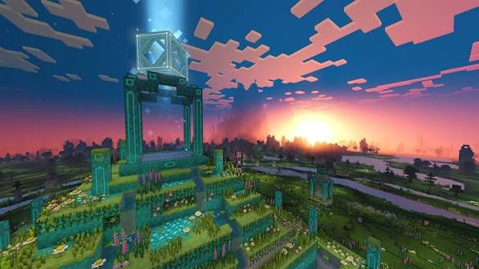
Overworld: El mundo principal, donde comienza la partida y se encuentran la mayoría de biomas.
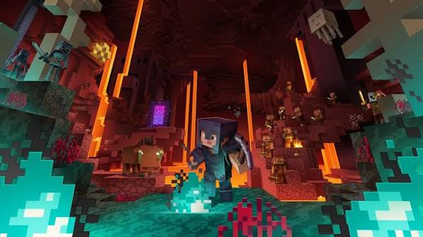
Nether: Dimensión infernal accesible con un portal de obsidiana; hogar de los piglins, el bastión y la Fortaleza del Nether.

End: Dimensión final a la que se llega mediante un portal activado con Ojos de Ender; aquí habita el Dragón del End.
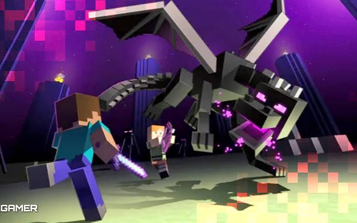
Ender Dragon: Jefe final del End. Vuela sobre torres de cristal que la curan; hay que destruirlas antes de atacarla directamente.
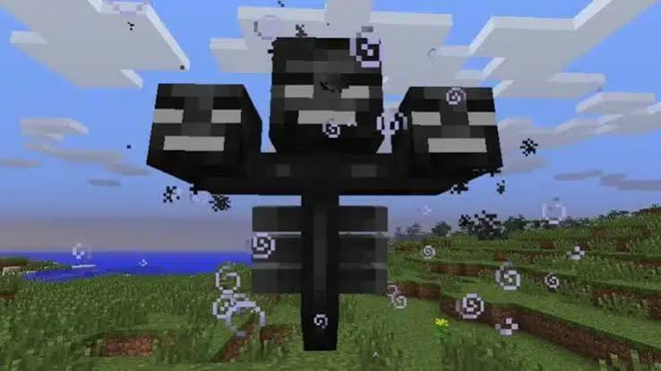
Wither: Jefe invocable en el Overworld o Nether con 3 cráneos de Wither Skeleton y arena de almas. Dispara cráneos explosivos y aplica el efecto Marchitez.
| Categoría | Ejemplos |
|---|---|
| Historia del juego | Conseguir madera, fabricar herramientas de piedra, entrar al Nether. |
| Aventura | Derrotar mobs, explorar templos, encontrar un cofre en cada estructura. |
| Nether | Comerciar con piglins, conseguir todos los materiales del Nether, derrotar al Wither. |
| El End | Derrotar al Dragón del End, encontrar una ciudad del End, obtener el Elytra. |
| Husbandry (Cría y agricultura) | Domesticar animales, cultivar todas las semillas, criar todos los mobs reproducibles. |
Video recomendado para quienes recién empiezan a jugar Minecraft.
Video con la estrategia completa para el jefe final del End.
Consigue el juego desde su página oficial.
Comprar Minecraft